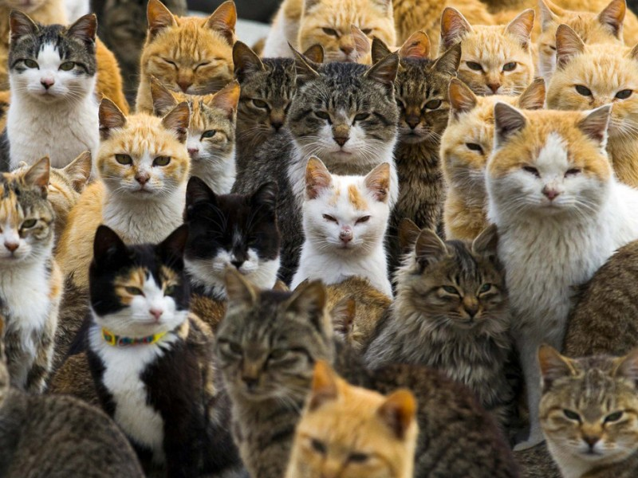

Our Cats
Here are some more details on the cats we currently have up for adoption:
Billy and Mandy:
-
Billy and Mandy are siblings and would prefer to be rehomed together. They are both around five years old.
Greta:
-
Greta is a gentle tabbycat in need of a new home after her old owner passed away. All she needs in the world is a warm lap to cuddle up on affectionately.
Jacob:
-
Jacob was rescued from the back of an icecream truck after seeking shelter there. He had been living rough for quite some time before that and as such takes a little while to get used to new people. Jacob would prefer being the only cat in his house.
Alfie:
-
Alfie was brought to the Centre after being dumped in a hedge near a busy road. This experience hasn't set him back however, this tiny black kitten is eager to play and will love you forever if you feed him.